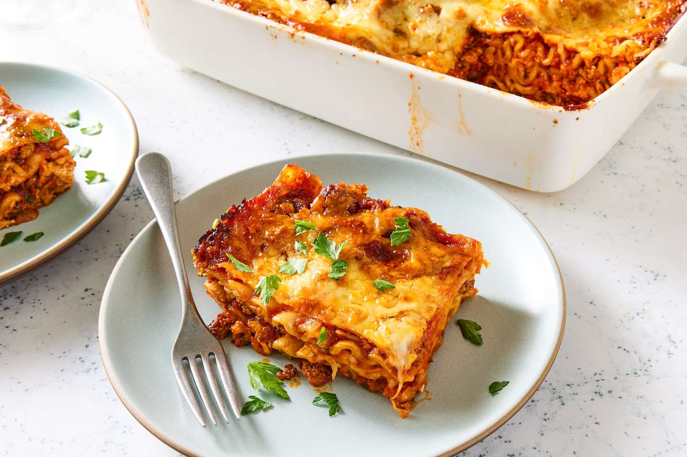

Lasagna Recipes

LASAGNA FINGER LICKING DISH
With the world looking for a fast food that is highly nutricious,
accomodating and worth it. Look no further.
All you need from start to finish with an Aroma of your next delicious
lasagna is here.
Ingredients
- Lasgna noodles
- Ground Meat
- Tomato Products
- Ricotta
- Mozzarella
- Onion
- Eggs
Steps
-
Brown the Meat: In a large skillet or pot, cook ground beef and Italian
sausage over medium-high heat until browned, breaking it up as it cooks.
Drain excess fat.
-
Make the Sauce: Add diced onions and garlic to the meat and cook until
soft. Stir in tomato paste, crushed tomatoes, and herbs (oregano, basil,
salt, pepper). Simmer on low for at least 30 minutes.
-
Prepare the Noodles: If using regular noodles, boil in salted water
until al dente (usually 8-10 mins). Drain and rinse with cold water to
prevent sticking. If using no-boil noodles, skip this step.
-
Make the Cheese Mixture: In a bowl, combine ricotta cheese, one egg,
parmesan cheese, and parsley/herbs.
-
Assemble - Layer 1: Spread a thin layer of meat sauce on the bottom of
the baking dish to prevent sticking. Top with a layer of noodles. Spread
a portion of the ricotta mixture over the noodles, followed by
mozzarella cheese and meat sauce.
-
Bake: Cover the dish with aluminum foil (tip: spray the foil with
cooking spray to prevent cheese from sticking). Bake for 25-30 minutes.
-
Finish and Brown: Remove the foil and bake for an additional 10-15
minutes until the cheese is bubbly and lightly browned.
-
Rest: Allow the lasagna to sit for 10-15 minutes before cutting to
ensure the layers hold together.